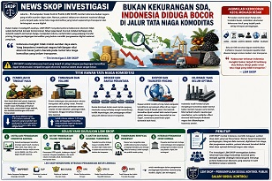

NEWS SKOP
Media Informasi dan Sosial Kontrol Publik
Media Informasi dan Sosial Kontrol Publik

LSM SKOP menyampaikan hasil pengamatan terhadap perkembangan pelayanan publik dan kebijakan.
Baca selengkapnya →
Laporan terbaru menunjukkan dinamika kebijakan ekonomi dan investasi di Indonesia.
Baca selengkapnya →
NEWS SKOP menyiapkan laporan investigasi dan analisis kebijakan publik.
Baca selengkapnya →